Front Suspension
Knuckle/Hub/Wheel Bearing ReplacementKnuckle/Hub/Wheel Bearing:
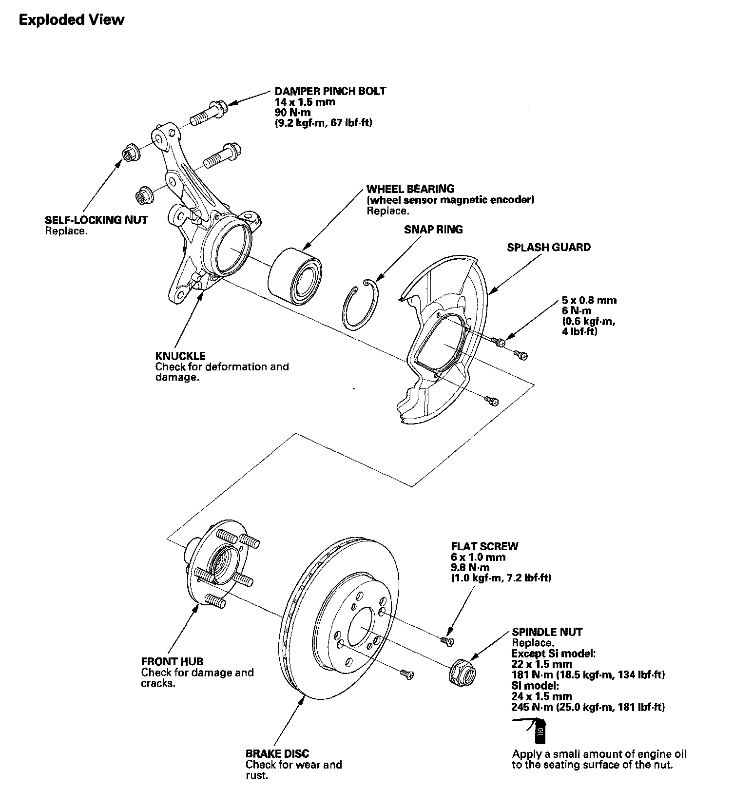
Special Tools Required
^ Hub dis/assembly tool 07GAF-SD40100
^ Hub dis/assembly tool 07GAF-SE00100
^ Ball joint remover, 32 mm 07MAC-SL0A102
^ Ball joint remover, 28 mm 07MAC-SL0A202
^ Ball joint thread protector, 14 mm 071AF-S3VA000
^ Attachment, 62 x 68 mm 07746-0010500
^ Driver 07749-0010000
^ Attachment, 96 mm 07948-SB00101
^ Support base 07965-SD90100
Knuckle/Hub Replacement
1. Raise the front of the vehicle, and support it with safety stands in the proper locations.
2. Remove the wheel nuts (A) and the front wheel.
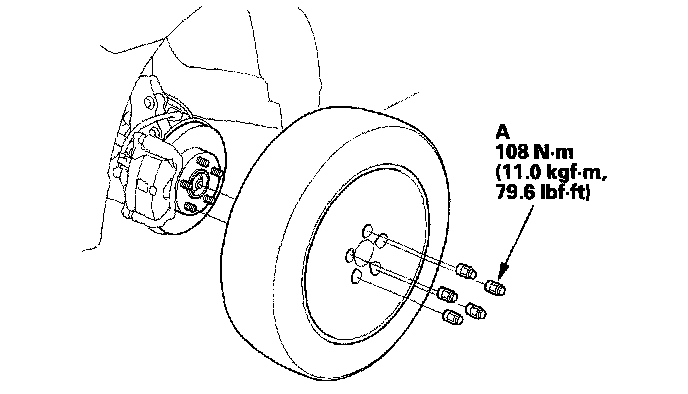
3. Remove the brake hose mounting bolt (A).
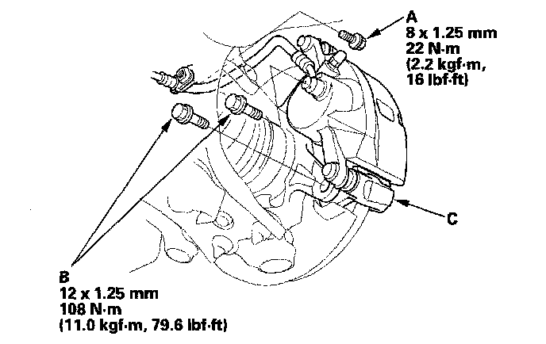
4. Remove the brake caliper bracket mounting bolts (B), and remove the caliper assembly (C) from the knuckle. To prevent damage to the caliper assembly or brake hose, use a short piece of wire to hang the caliper assembly from the undercarriage. Do not twist the brake hose excessively.
5. Remove the wheel sensor (A) from the knuckle (B). Do not disconnect the wheel sensor connector.
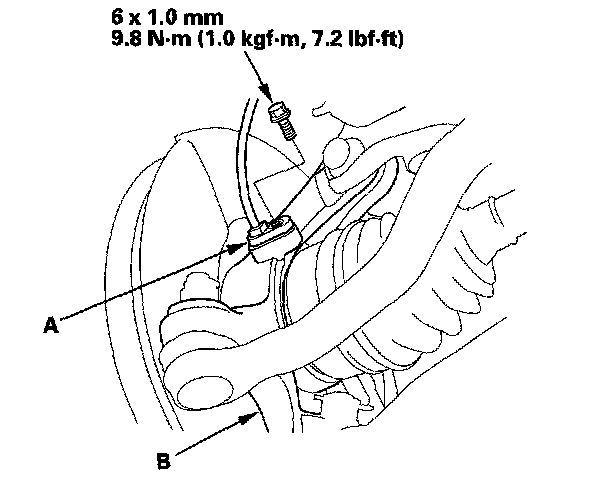
6. Raise the stake (A), then remove the spindle nut (B).
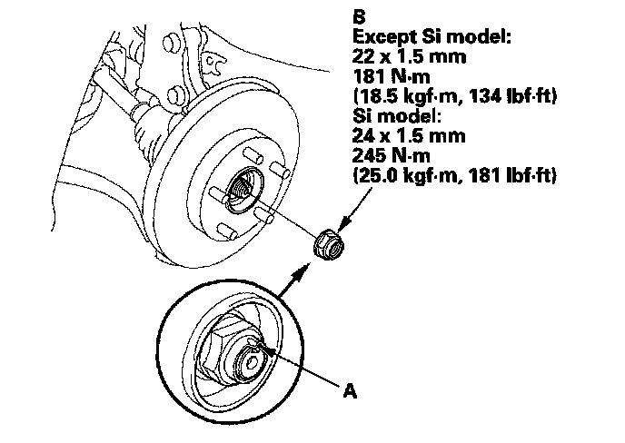
7. Remove the 6 mm brake disc retaining screws (A).
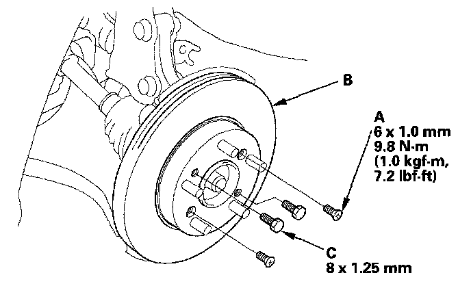
8. Remove the brake disc (B) from the hub.
NOTE: If the brake disc has clung to the hub. Screw two 8 x 1.25 mm bolts (C) into the brake disc to push it away from the hub. Turn each bolt 90° to prevent the brake disc from binding.
9. Check the front hub for damage and cracks.
10. Remove the cotter pin (A) from the tie-rod end ball joint, then remove the nut (B).
NOTE: During installation, install the new cotter pin after tightening the nut, and bend its end as shown.
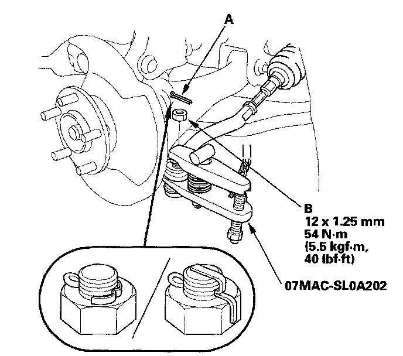
11. Disconnect the tie-rod ball joint from the knuckle using the ball joint remover.
12. Remove the flange bolt and flange nuts from the lower arm (A).
NOTE: During installation, install a new flange bolt and new flange nuts. After lightly tightening all three fasteners, tighten them to the specified torque in the following order; the nut on the front (B), the nut on the rear (C), then the bolt (D).
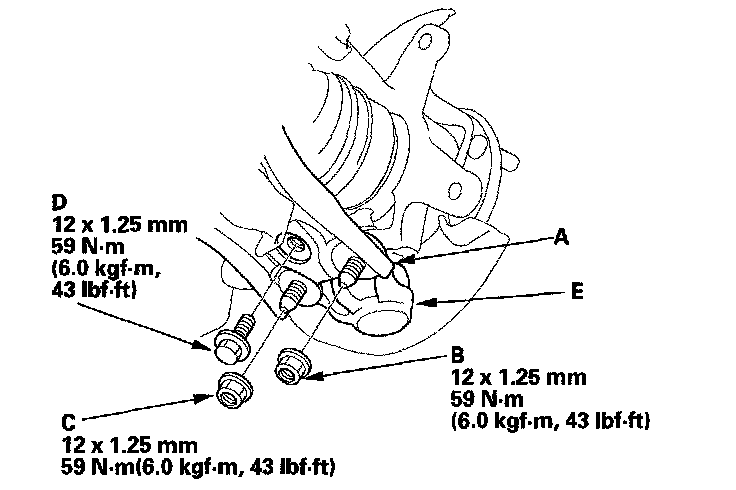
13. Disconnect the lower ball joint (E) from the lower arm.
14. Remove the damper pinch bolts (A) and the self locking nuts (B) from the damper.
NOTE: During installation, install the new damper pinch bolts and the new self-locking nuts.
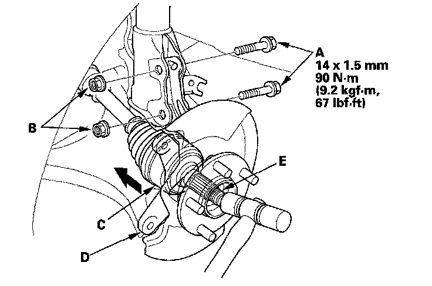
15. Remove the driveshaft outboard joint (C) from the knuckle (D) by tapping the driveshaft end (E) with a plastic hammer while drawing the hub outward, then remove the knuckle.
NOTE:
^ Do not pull the driveshaft end outward. The inner driveshaft joint may come apart.
^ During installation, apply grease to the mating surface of the wheel bearing and driveshaft outboard joint.
16. Remove the lock pin (A) from the lower ball joint pin (B), then remove the nut (C).
NOTE: During installation, install a lock pin after tightening the new castle nut.
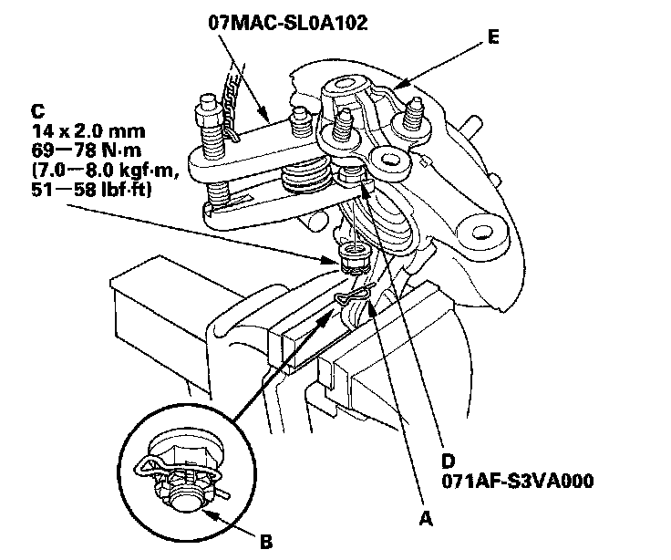
17. Install the ball joint thread protector (D).
18. Disconnect the lower ball joint (E) from the knuckle using the ball joint remover.
19. Install the knuckle/hub in the reverse order of removal, and note these items:
^ Be careful not to damage the ball joint boot when installing the knuckle.
^ Tighten all mounting hardware to the specified torque values.
^ Before connecting the lower ball joint to the knuckle, degrease the threaded section and tapered portion of the ball joint pin, the knuckle connecting hole, the threaded section, and mating surface of the castle nut.
^ First install all the components, and lightly tighten the bolts and nuts, then raise the suspension to load it with the vehicle's weight before fully tightening to the specified torque values.
^ Torque the castle nut to the lower torque specification, then tighten it only far enough to align the slot with the ball joint pin hole. Do not align the castle nut by loosening it.
^ Use a new spindle nut during reassembly.
^ Before installing the spindle nut, apply a small amount of engine oil to the seating surface of the nut. After tightening, use a drift to stake the spindle nut shoulder against the driveshaft.
^ Before installing the brake disc, clean the mating surface of the front hub and the inside of the brake disc.
^ Before installing the wheel, clean the mating surface of the brake disc and the inside of the wheel.
^ Check the wheel alignment, and adjust it if necessary.
Wheel Bearing Replacement
1. Separate the hub (A) from the knuckle (B) using the hub dis/assembly tool and a hydraulic press. Hold the knuckle with the attachment (C) of the hydraulic press or equivalent tool. Be careful not to deform the splash guard. Hold onto the hub to keep it from falling when pressed clear.
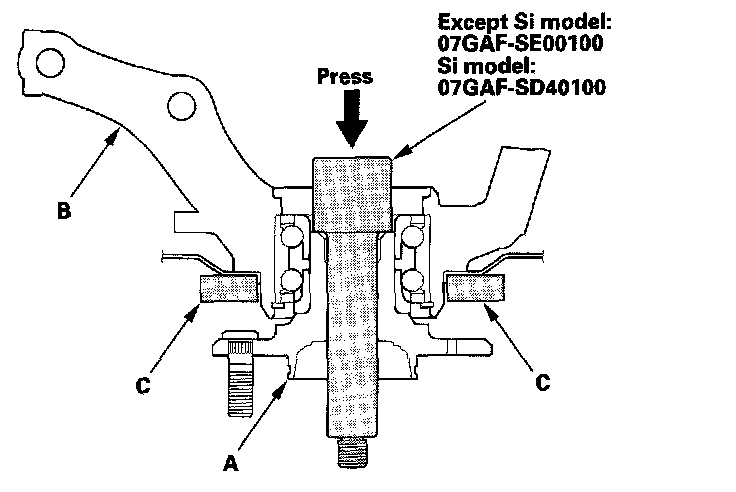
2. Press the wheel bearing inner race (A) off of the hub (B) using the hub dis/assembly tool, a commercially available bearing separator (C), and a press.
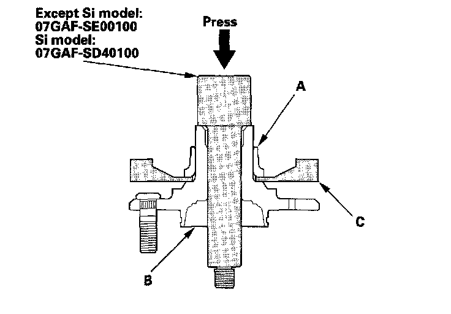
3. Remove the splash guard (A) and the snap ring (B) from the knuckle (C).
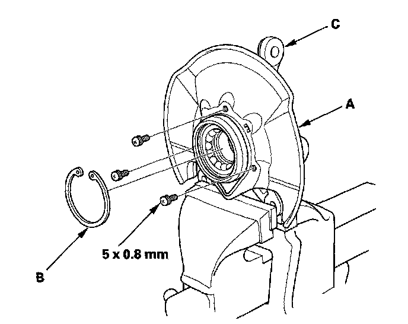
4. Press the wheel bearing (A) out of the knuckle (B) using the attachment, the driver, and a press.
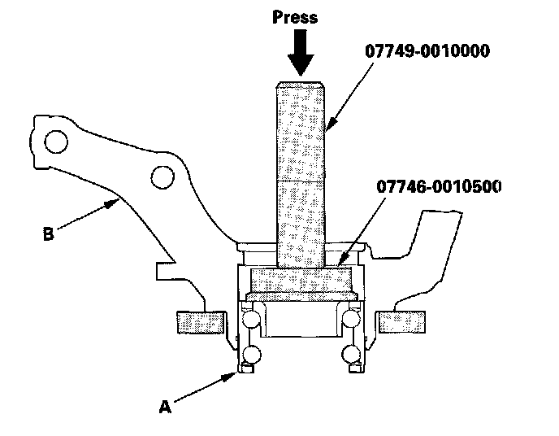
5. Wash the knuckle and hub thoroughly in high flash point solvent before reassembly.
6. Press a new wheel bearing (A) into the knuckle (B) using the old bearing (C), a steel plate (D), the attachment, the support base, and a press.
NOTE:
^ Install the wheel bearing with the wheel sensor magnetic encoder (E) (brown color), toward the inside of the knuckle.
^ Remove any oil, grease, dust, metal debris, and other foreign material from the encoder surface.
^ Keep all magnetic tools away from the encoder surface.
^ Be careful not to damage the encoder surface when you insert the wheel bearing.
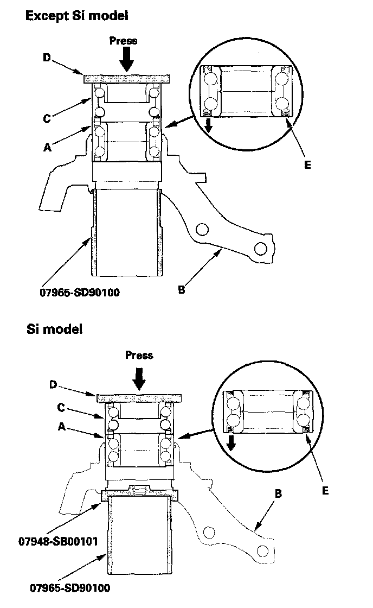
7. Install the snap ring (A) securely in the knuckle (B).
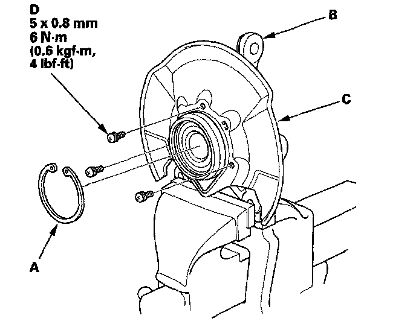
8. Install the splash guard (C), and tighten the screws (D) to the specified torque value.
9. Install the hub (A) onto the knuckle (B) using the attachment, the driver, the support base, and a hydraulic press, Be careful not to distort the splash guard (C).
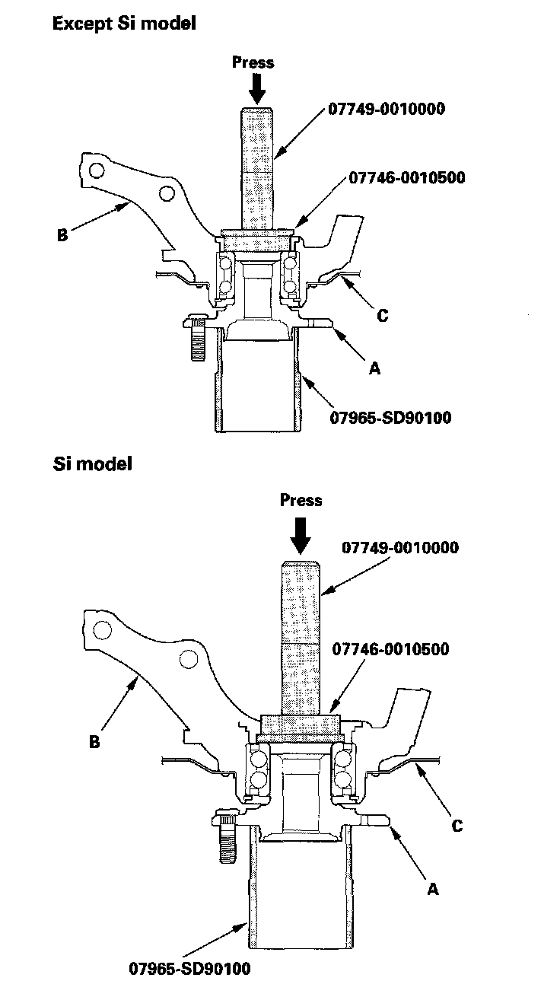